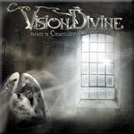

|
|
||
Vision Divine : Stream of Consciousness (2004) |
|

http://www.visiondivine.com |
1. Stream of Unconsciousness 0:56 |
8.2/10 |
|
Vuelve la banda creada como un proyecto paralelo de Olaf Thörsen, en ese momento guitarrista de Labyrinth, junto a Fabio Lione, cantante de Rhapsody, con un nuevo álbum titulado Stream of Consciousness. La banda ha sufrido varios cambios importantes desde el anterior trabajo, Send me an Angel: lo primero de todo es decir que Fabio Lione ya no canta, le era complicado hacerlo a la vez en Rhapsody y en Vision Divine. Ahora el cantante es un desconocido llamado Michele Luppi. El otro gran cambio es que ahora Olaf Thörsen ya no está en Labyrinth, con lo que Vision Divine se ha convertido en su proyecto principal. Hay otros cambios en la formación que podéis consultar en la página del grupo, pero estos dos eran de obligada mención. Una cortita introducción, que parece un homenaje a Helloween puesto que se escucha a alguien que está oyendo la radio y tarareando la canción que ponen, y las pesadas guitarras irrumpen en "The Secret of Life", junto al doble bombo, arrollador a veces, y con la primera incógnita resuelta: la voz de Michele Luppi es brillante, potente, se mueve con soltura en rangos medios-altos, y le pega a la banda. Un estribillo pegadizo y sintetizadores muy presentes completan un buen tema de arranque. El metal progresivo reluce a través de "Colours of my World", con los teclados de nuevo en primera línea, y de nuevo el estribillo consigue captar la atención desde la primera escucha. Tras la primera pieza instrumental, "In the Light", ruge de nuevo la guitarra en "The Fallen Feather", canción de tempo cambiante, tirando a lento, y atmósfera triste. "La Vita Fugge" recupera la vitalidad, entre el doble bombo, los brillantes coros del estribillo y los frenéticos solos de teclado y de guitarra. El séptimo corte, "Versions of the Same", recupera un ritmo más pausado y un aire más melódico, que quizás le restan algo de pegada. "Through the Eyes of God" recupera los cambios de ritmo, y sin perder la melodía mantiene una base más contundente. Un inquietante comienzo basado en sintetizadores deja paso al doble bombo en "Shades", tema rápido, con algunos riffs neoclásicos un excelente trabajo a la voz de Luppi y varios pasajes fácilmente recordables. Más guitarrera surge "We are, we are not", quizás la canción más directa y menos progresiva del disco. "Fool's Garden" es una pieza instrumental desarrollada sobre los teclados y casi acústica. Le sigue, "The Fall of Reason" también instrumental, aunque mucho más electrónica, arriesgada y vanguardista. "Out of the Maze" hubiera podido perfectamente sustituir a "The Secret of Life" como apertura del disco, por su fuerza, forjada sobre el doble bombo y al calor de las guitarras, y por su interés, con una melodía que no aburre y un estribillo bastante pegadizo. "Identities" es el tema que sonaba "en la radio" en la introducción al disco: es una balada con la clásica estructura primera parte acústica / parte final eléctrica, con partes instrumentales llenas de sensibilidad y buen gusto y bien interpretada por Luppi. ¿Cómo ha quedado el disco con tantos cambios en la banda? Más progresivo: sonidos de sintetizador variados y siempre presentes, y largos solos de teclado que pueden llegar a cansar un poco. La voz de Michele Luppi está muy bien y no hará echar de menos a Fabio Lione. El estilo de la banda es algo difícil de precisar, pero algo a medio camino entre el power metal melódico y el metal progresivo: un álbum variado, indudablemente progresivo pero que no deja de lado el doble bombo ni las guitarras potentes. Si no te gustan los solos de teclado, probablemente este álbum te cansará, pero si una mezcla en las dosis adecuadas de metal clásico y progresivo es lo tuyo, este álbum seguro que no te decepcionará. |
||
- Crítica escrita por Rubén Béjar - |
||